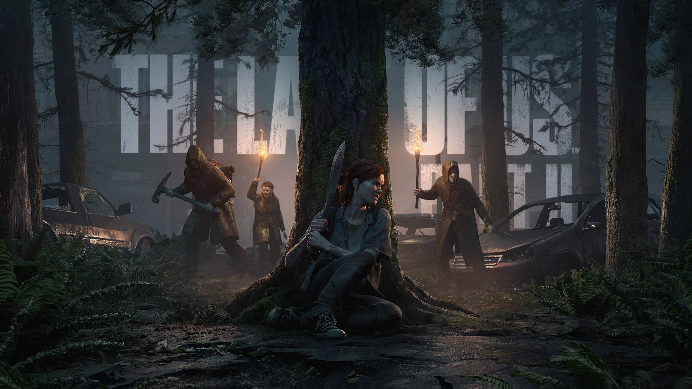
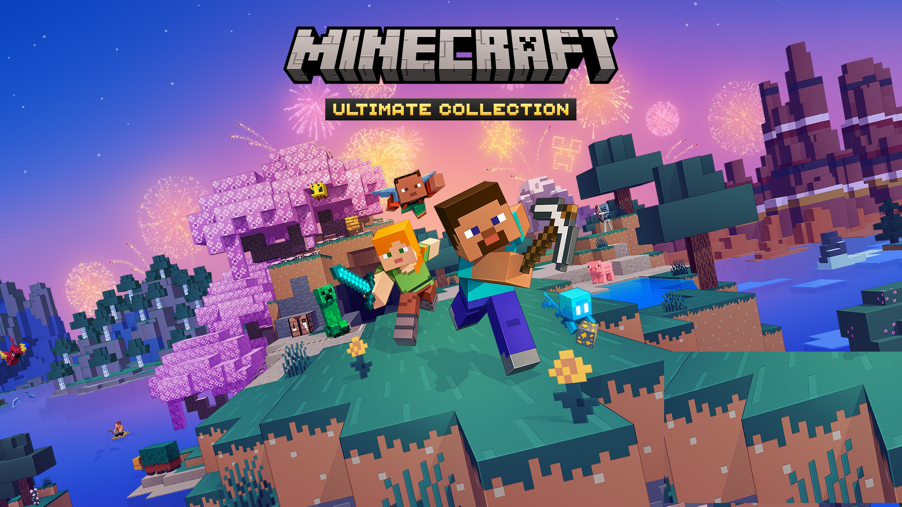
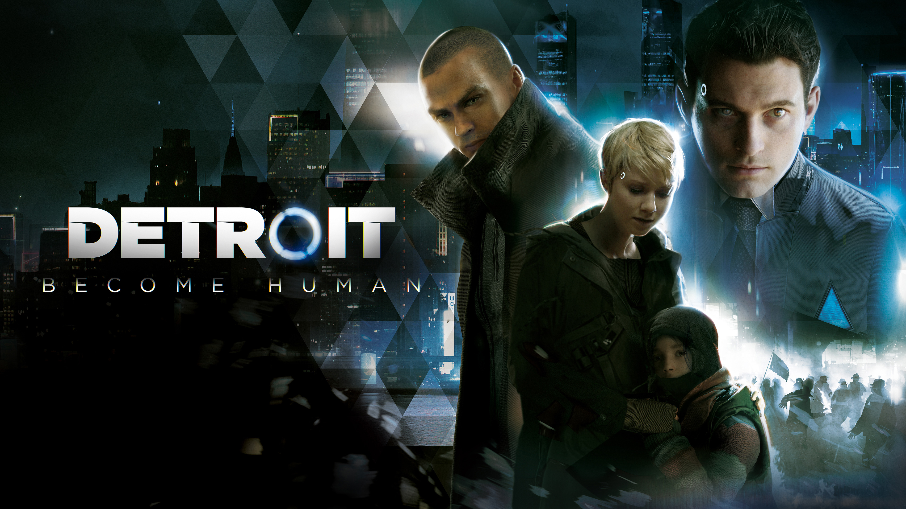
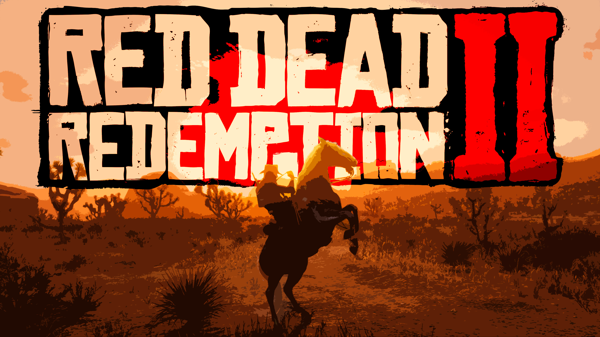
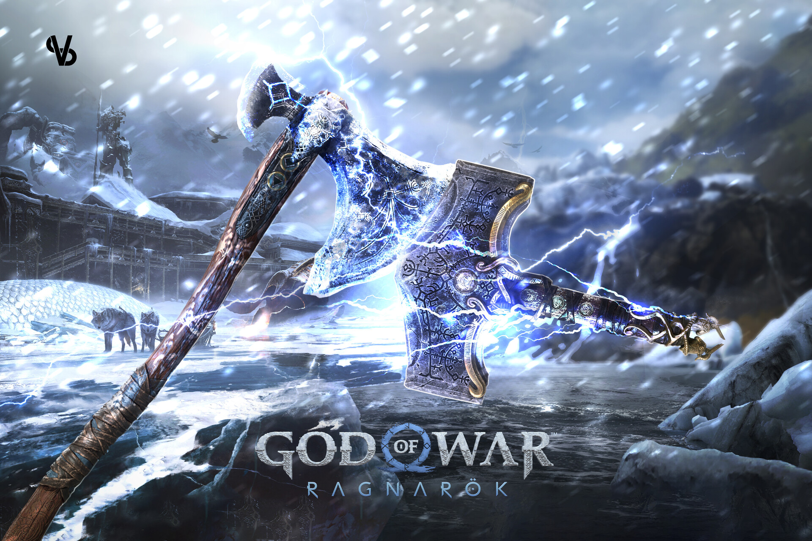
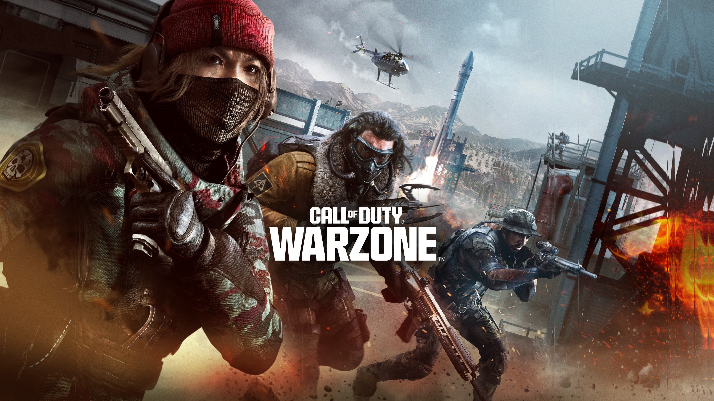
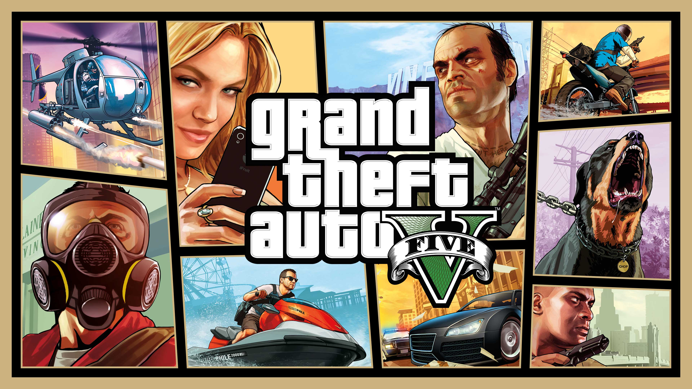

1. The Last of Us Part II

Uma jornada emocional intensa e visceral focada na vingança e no ciclo de violência. O jogo expande a jogabilidade furtiva e traz gráficos e atuações espetaculares, acompanhando Ellie em um mundo pós-apocalíptico implacável onde as linhas entre o certo e o errado são borradas.
2. Valorant

Um jogo de tiro tático em primeira pessoa (FPS) competitivo e gratuito, desenvolvido pela Riot Games. Combina mecânicas de tiro de alta precisão com personagens (agentes) únicos que possuem habilidades especiais e estratégicas, exigindo muito trabalho em equipe e coordenação.
3. Minecraft

O jogo de sobrevivência e construção com blocos definitivo. Oferece liberdade total para explorar mundos gigantescos gerados de forma procedural, minerar recursos e construir qualquer coisa que a sua imaginação permitir, seja no modo Criativo ou enfrentando perigos no Sobrevivência.
4. Detroit: Become Human

Um jogo focado em narrativa interativa cinematográfica e escolhas profundas. A história acompanha três androides que começam a desenvolver sentimentos e consciência humana. Cada decisão do jogador molda o destino dos personagens e pode levar a finais drasticamente diferentes.
5. Marvel's Spider-Man 2

Uma espetacular aventura de super-heróis onde você joga alternando entre Peter Parker e Miles Morales. O jogo traz uma Nova York expandida, mecânicas de balanço de teia ultra velozes com as novas asas de teia e uma história emocionante contra vilões icônicos como Venom e Kraven.
6. Red Dead Redemption 2

Uma obra-prima de mundo aberto da Rockstar Games que narra a história trágica de Arthur Morgan e a gangue Van der Linde. Destaca-se por seu realismo extremo, imersão impressionante e uma das narrativas mais emocionantes já contadas sobre o declínio do Velho Oeste.
7. God of War Ragnarök

A épica conclusão da saga nórdica de Kratos e seu filho Atreus. O jogo combina um combate visceral extremamente refinado e divertido com uma história madura e emocionante sobre destino, família, escolhas e o iminente fim do mundo.
8. Elden Ring

Um RPG de ação em mundo aberto fenomenal criado pela FromSoftware em colaboração com o escritor George R.R. Martin. Desafia o jogador a explorar as vastas e perigosas Terras Intermédias, oferecendo combate técnico, dezenas de segredos e liberdade total de exploração.
9. Call of Duty

Uma das maiores e mais influentes franquias de tiro em primeira pessoa (FPS) da história. Famosa por suas campanhas com ação cinematográfica explosiva e, principalmente, por um modo multiplayer frenético e competitivo que definiu o cenário de jogos de guerra modernos.
10. Grand Theft Auto V

Um clássico absoluto dos jogos de mundo aberto que conta a história interconectada de três criminosos em Los Santos. Oferece uma liberdade absurda de exploração, missões de assalto elaboradas e divertidas, e um mapa vivo que marcou a história dos videogames.